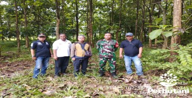

INDRAMAYU, PERHUTANI ( 27/01/2026) | Dalam rangka mitigasi terjadinya gangguan keamanan hutan (Gukamhut) bencana alam dan pohon rawan tumbang, Perum Perhutani Kesatuan Pemangkuan Hutan (KPH) Indramayu menggelar patroli bersama dengan melibatkan Stakeholder, diantaranya Bintara Pembina Masyarakat (Babinmas) dan Pemerintahan desa Cikawung. Kegiatan tersebut berlangsung di wilayah hutan Resort Pemangkuan Hutan (RPH) Cikamurang, Bagian Kesatuan Pemangkuan Hutan (BKPH) Cikawung masuk administratif Desa Cikawung Kecamatan Terisi Kabupaten Indramayu, pada Senin (27/01). Hadir dalam kegiatan tersebut Asisten Perhutani (Asper) Cikawung Hendri Yana Yuhana beserta jajaran, Babinmas Desa Cikawung Bripka Raita , Kaur Kesra Desa Cikawung Ruslan beserta aparat desa lainnya.
Administratur KPH Indramayu melalui Asisten Perhutani (Asper) Cikawung Hendri Yana Yuhana menyampaikan ucapan terima kasih kepada jajaran TNI Komando Rayon Militer (KORAMIL) Sektor Terisi dan Pemerintahan Desa Cikawung yang sering melakukan patroli bersama dengan Perhutani. Patroli gabungan ini bertujuan untuk mengantisipasi terjadinya Gukamhut dan memberikan pelayanan pada masyarakat sekitar hutan yang biasa beraktifitas disekitar kawasan hutan.
“Kegiatan ini bertujuan untuk meningkatkan keamanan hutan serta mempererat kebersamaan antara Perhutani dan masyarakat sekitar, serta stakeholder lainnya. Semoga dengan kekompakan dan kebersamaan ini, KPH Indramayu tetap aman dan kondusif, serta dapat terjaga dengan baik, ” ujarnya. Sementara itu, Babinmas Desa Cikawung Bripka Raita , mengajak masyarakat untuk berperan aktif dalam menjaga kelestarian hutan dan mencegah gangguan keamanan. “Kegiatan patroli bersama ini menjadi momentum untuk mempererat sinergi antara masyarakat dan Perhutani. Menjaga hutan adalah kewajiban bersama, dan kami siap berkolaborasi demi kelestarian hutan dan keamanan lingkungan, ” tuturnya.
Editor: WK
Copyright © 2026 Warta Nusantara Barat